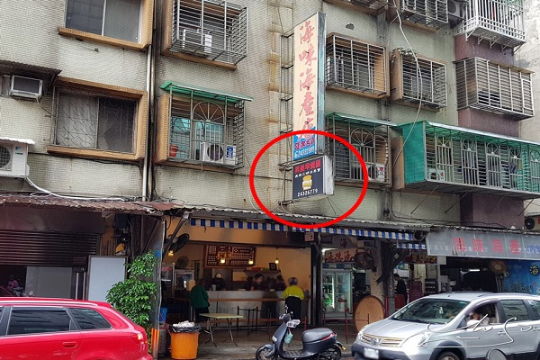
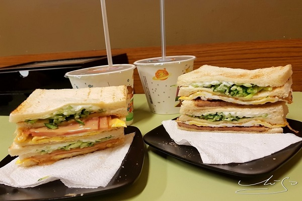
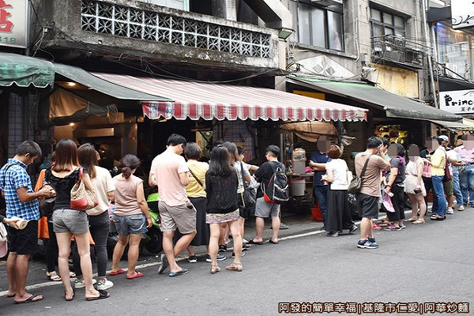
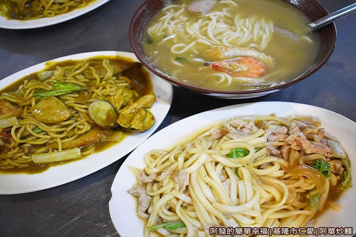
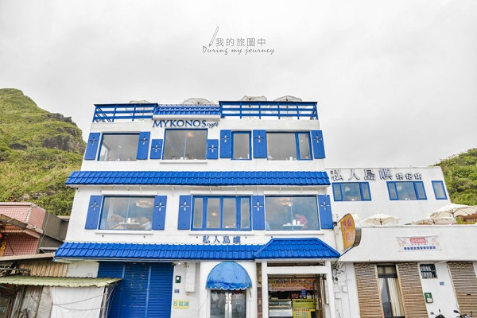
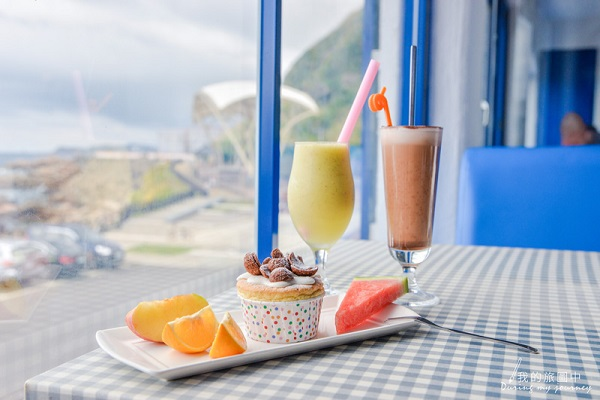

[食記] 基隆小吃
位在台灣北端的基隆，一直是許多台北人休假旅遊放鬆的首選之一，
除了交通方便，更藏著許多只有基隆在地人才知道的美食，
這次特別整理出基隆在地人才知道的「3間基隆美食」，
就是要讓你現在就衝基隆吃美食。
Top1:昇美早餐屋
 
早餐是一天的活力來源早餐吃的好一天沒煩惱XDD
這裡要先注意一點，昇美的招牌很小很不其眼
招牌火腿蛋三明治 $40，裡面除了美乃滋之外還有
塗花生醬，小黃瓜給的夠火腿又是給兩片
味道也好吃~簡單的美味最棒了
地址 : 基隆市仁愛區成功一路118巷1號
電話 : 02-2432-6779
時間 : 05:00~11:00
Top2:阿華炒麵
 
阿華炒麵攤前，很誇張的排隊人潮,座位不多且就在騎樓上，
而且沒有空調，在炎熱的夏季午後，卻依然不減排隊等候的人潮。
要兩大類選擇：麵類和湯類。麵類又分為四種口味的炒麵，
與兩種口味的湯麵。麵條則可選擇：油麵、烏龍麵、米粉。
地址：基隆市仁愛區愛四路1-3號（基隆廟口夜市旁）
電話：2429-2163
時間：上午10:30~隔天早上06：00；(週一休息)
Top3:私人島嶼Mykonos
 